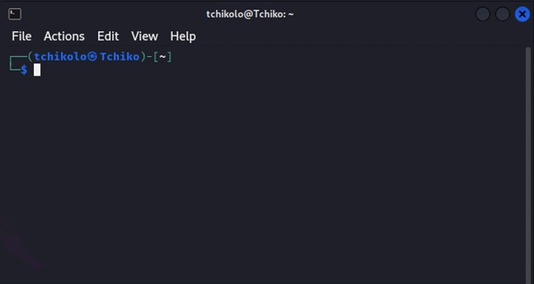
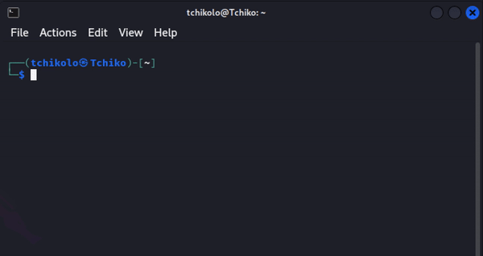
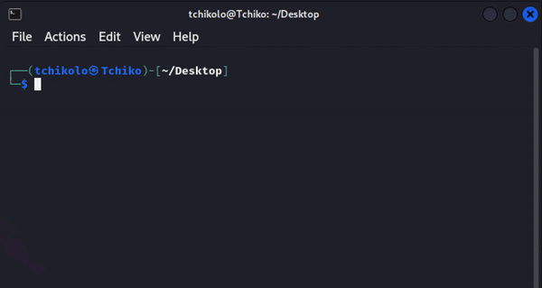
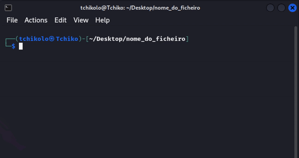
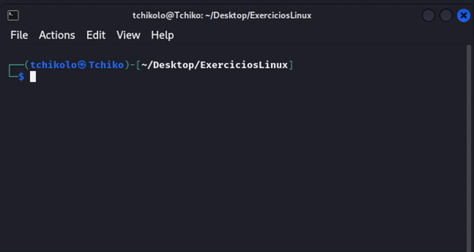
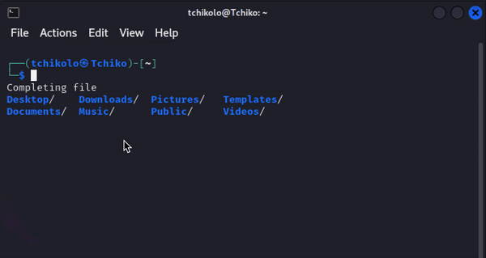
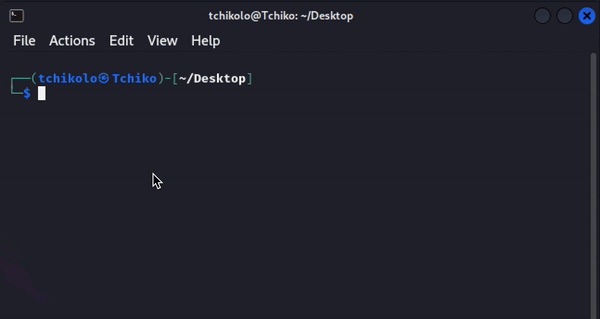
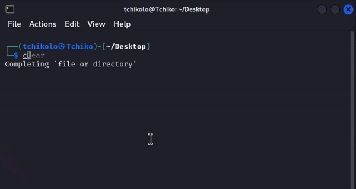
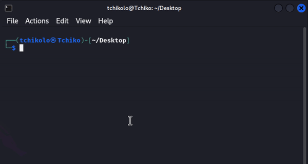
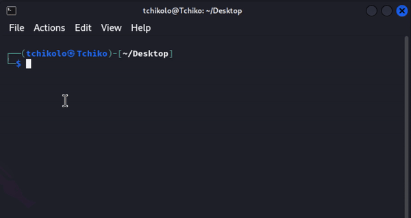

Kali Linux é um sistema operacional especializado projetado para análise forense digital e testes de penetração. Desenvolvido pela Offensive Security, o sistema operacional oferece uma ampla gama de ferramentas para tarefas de segurança cibernética. Quer você seja um hacker ético experiente ou iniciante, o Kali Linux oferece um ambiente versátil para trabalhar. Kali Linux possui ferramentas pré-instaladas para diversas tarefas de segurança, incluindo coleta de informações, análise de vulnerabilidades, ataques de senha e ataques sem fio. Este pacote completo permite que hackers éticos simplifiquem seu trabalho e se concentrem em seu objetivo principal: identificar e corrigir vulnerabilidades de segurança.
Navegação de Diretorios:
Aprenda a explorar e gerenciar a estrutura de diretórios do sistema, utilizando comandos para listar, acessar e criar diretórios.
1. 'ls' -- Um dos comandos mais básicos e usados com frequência no Linux, o comando ls lista o conteúdo de um diretório. Usar ls permite ver rapidamente quais arquivos e pastas estão em seu diretório atual. Por exemplo:
$ ls

2. 'cd' -- O comando cd, abreviação de "change directory”, permite navegar entre diretórios. Por exemplo, para mover para o diretório anterior é utilizado:
$ cd ..

3. 'mkdir' -- O comando mkdir, abreviação de "make directory", permite criar novos diretórios. Por exemplo, para criar um novo diretório chamado nome_do_ficheiro, você executaria:
$ mkdir nome_do_ficheiro
4. 'cd' -- O mesmo comando anteriormente mostrado mas desta vez permite movemonos para um diretorio mais especifico:
$ cd nome_do_ficheiro

Manipulação de Ficheiros e Diretórios:
Manipule arquivos e pastas no sistema, incluindo criação, renomeação, e organização, para manter os dados bem-estruturados.
5. 'mkdir' -- Vamos criar um diretorio com o nome 'ExerciciosLinux':
$ mkdir ExerciciosLinux

6. 'touch' -- Em seguida vamos criar um ficheiro de texto com o nome 'ficheiro.txt':
$ touch ficheiro.txt
7. 'ls' -- Podemos listar o conteúdo do nosso diretorio para termos uma ideia de onde estamos:
$ ls
8. 'mv' -- Com o comando mv podemos renomear ficheiros, neste caso vamos renomear 'ficheiro.txt' para 'novo_ficheiro.txt':
$ mv ficheiro.txt novo_ficheiro.txt
Visualização de Conteudo:
Visualize o conteúdo de arquivos diretamente no terminal, facilitando a análise de informações sem a necessidade de editores externos.
9. 'cat' -- O Comando cat permite mostrar o conteudo de um ficheiro no terminal, vamos ver o conteudo presente no ficheiro 'nome_do_ficheiro':
$ cat nome_do_ficheiro

10. 'cat' -- Agora vamos ver o conteudo de '/etc/hosts':
$ cat /etc/hosts
11. 'tail' -- O tail mostra a ultima linha do conteudo de um ficheiro, no caso as ultimas 5 linhas de um ficheiro de logs de sistema:
$ tail -n 5 /var/log/syslog
Gestão de Permissões:
Gerencie as permissões de acesso a arquivos e diretórios, garantindo segurança e controle sobre quem pode ler, escrever ou executar.
12. 'ls' -- No ls existem algumas outras funções como ver as permissões de um ficheiro ou diretorio:
$ ls -l nome_do_ficheiro/diretorio

13. 'chmod' -- O chmod altera permições de Proprietário, Grupo e Outros. As permissões incluem: r (read/leitura), w (write/escrita), x (execute/execução). E representação: Simbólica (rwxr-xr--) e Numericas (754). Todas essas permissões podem ser alteradas com o comando chmod:
$ chmod g+w novo_ficheiro.txt
Comandos de Procura:
Localize rapidamente arquivos e diretórios no sistema utilizando ferramentas de busca eficientes e personalizáveis.
14. 'find' -- O find, como o nome indica, procura ficheiros ou diretorios:
$ find
15. 'find' -- Encontrar ficheiros .txt no diretorio atual:
$ find . -name '*.txt'

16. 'find' -- Encontrar ficheiros com a plavra "linux" no nome:
$ find . -name '*Linux*'
Comandos de Cópia e Movimento:
Realize cópias ou mova arquivos e pastas entre locais diferentes, organizando os dados conforme necessário.
17. 'cp' -- O comando cp serve para copiar um ficheiro para um diretorio:
$ cp ficheiro destino
18. 'cp' -- O -r depois do cp faz com que o diretorio copiado seja juntamente copiado com o seu conteudo, neste caso, /ExerciciosLinux é copiado para /Home com os seus ficheiros:
$ cp -r ExerciciosLinux Home

19. 'mv' -- O comando mv não serve apenas para renomear um ficheiro, tambem serve para mover ficheiros para um diretorio, neste caso o novo_ficheiro é copeado para o diretorio "pai":
$ mv novo_ficheiro.txt ..

Comandos de informações do Sistema:
Obtenha informações detalhadas sobre o sistema, incluindo hardware, armazenamento e status operacional.
20. 'uname' -- uname é um dos comandos que permite obter informações do sistema:
$ uname -a
21. 'df' -- df permite exibir espaço livre e usado no disco:
$ df -h
22. 'lscpu' -- O comando lscpu mostra informações sobre a CPU no terminal:
$ lscpu
Comandos de Processos
Gerencie processos ativos no sistema, monitorando e encerrando aqueles que não são mais necessários.
23. 'ps' -- ps lista processos em execução:
$ ps aux

24. 'kill' -- O kill é um comando que permite acabar ou terminar um processo, por iD ou por nome:
$ kill ID_do_processo
25. 'pkill' -- O pkill é um comando que permite acabar ou terminar todos os processos com determinado ID ou nome:
$ pkill nome_do_processo
Comandos de Rede
Verifique o estado da rede, obtenha detalhes sobre conexões ativas e identifique portas abertas para diagnóstico e configuração.
26. 'ping' -- O ping verifica o estado da rede usando um link como por exemplo "jn.pt":
$ ping jn.pt
27. 'ifconfig' -- ifconfig exibe informações detalhadas de rede: